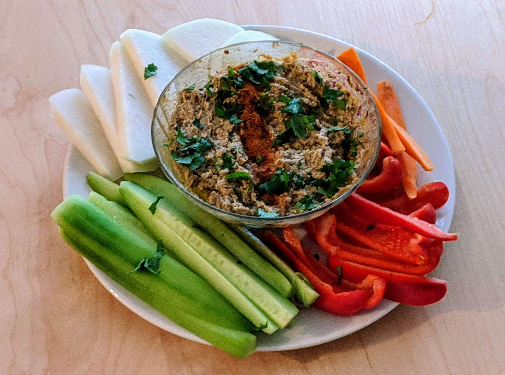

Baba ganousch

Pour 3-4 personnes :
- 2 grosses aubergines
- 3 gousses d'ail
- Un demi-citron
- 60mL de tahini
- 80mL de bonne huile d'olive
- Un bouquet de persil plat
- Une cuillère à café de cumin
- Une pincée de sel
- Un peu de paprika, fumé de préférence
- Faire préchauffer le four à 230°C. Couper les aubergines en deux dans le sens de la longueur, brosser l'intérieur d'huile d'olive, et les disposer sur une plaque de four recouverte de papier sulfurisé, le côté peau sur le dessus.
- Enfourner pendant 40-45 minutes, jusqu'à ce que la peau commence à s'affaisser et que l'intérieur soit très mou.
- Pendant ce temps, éplucher et presser l'ail, presser le citron, laver, égoutter et ciseler le persil (en laissant quelques feuilles entières pour la décoration).
- Laisser tiédir les aubergines, puis récupérer leur chair à la grosse cuillère. La mettre sur les bords d'une essoreuse à salade et égoutter doucement pour enlever un maximum de liquide. On peut aussi mélanger et presser le mélange sur une passoire fine pour enlever le jus.
- Mettre la chair d'aubergine dans un bol avec l'ail et le jus de citron, mélanger vigoureusement à la fourchette pour que les fils de l'aubergine se cassent au fur et à mesure.
- Lorsque ça commence à ne plus être filandreux, ajouter le tahini, et l'huile d'olive progressivement pour que ça devienne un peu pâle. Ajouter le persil ciselé sur la fin, avec le sel et le cumin.
- Servir avec un filet d'huile d'olive, le reste du persil et le paprika fumé parsemé sur le dessus.